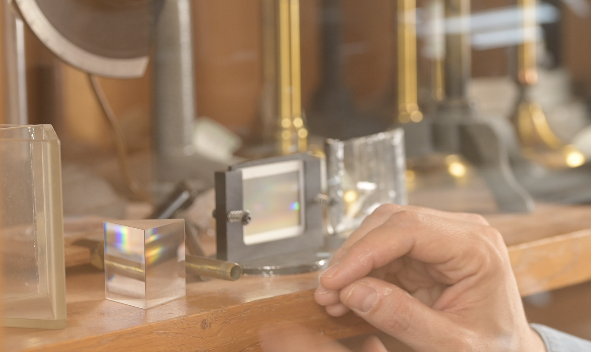
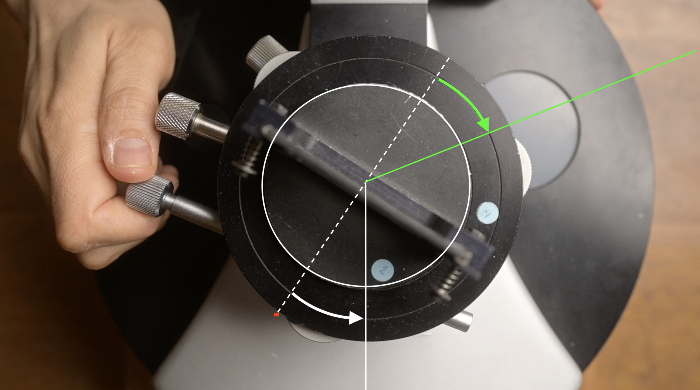
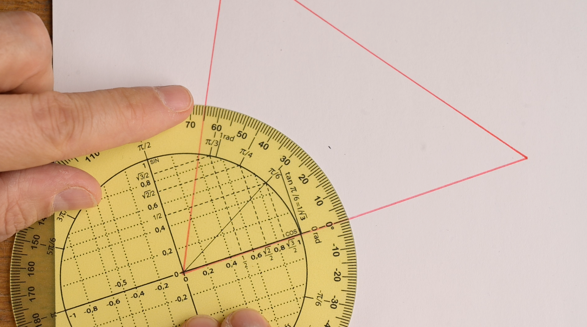
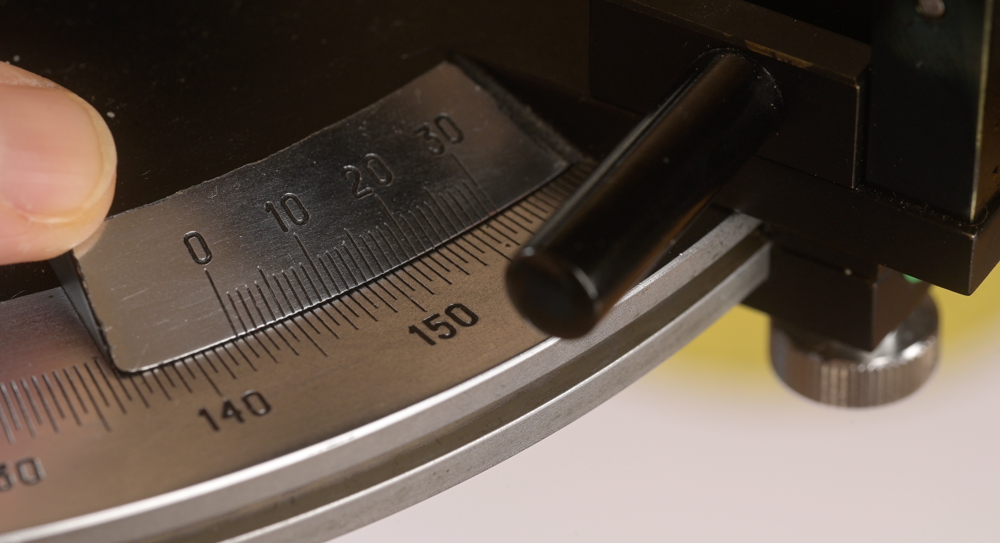
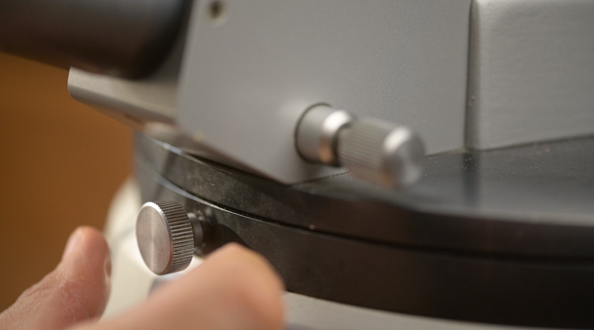
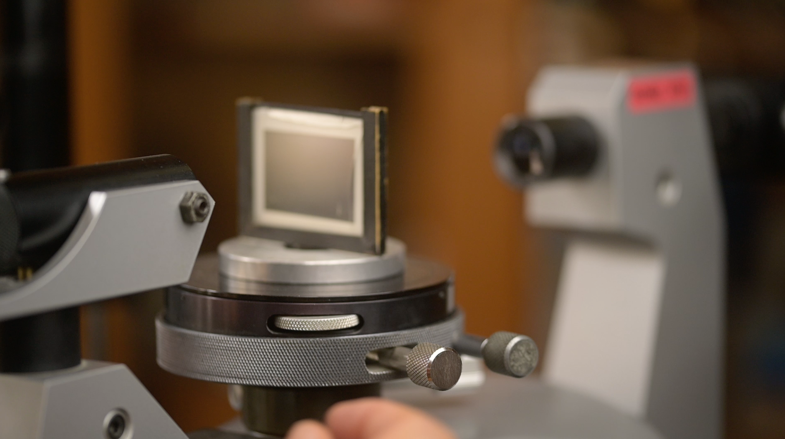
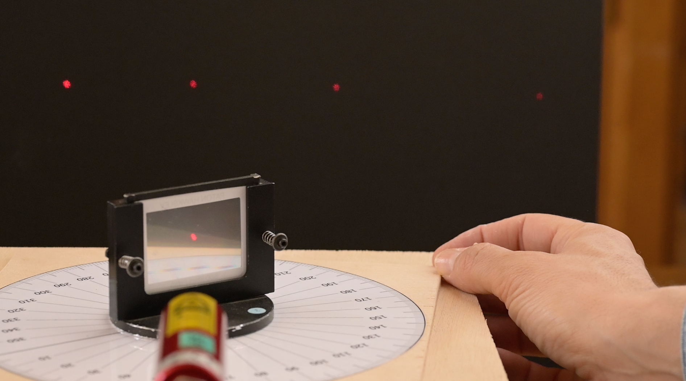

Le spectromètre à réseau
Épisode 1
Mesurer des angles pour déterminer des longueurs d'onde
- I - Goniomètre et spectromètre
- II - Mesurer des angles pour déterminer des longueurs d'onde.
- III - Analogie entre un rapporteur et un goniomètre.
- IV - Différences entre un rapporteur et un goniomètre.
- V - Comment se servir du goniomètre ? Le protocole à appliquer
- VI - Symétries des images diffractées au minimum de déviation
- VII - Symétrie de la situation de mesure
Introduction
Pour un physicien, les messages de la lumière sont nombreux et riches d'enseignements. Déterminer avec précision la longueur d'onde d'un rayonnement est le point de départ de nombreuses analyses dans des champs d'application très variés, des plus fondamentaux aux plus quotidiens.

I - Goniomètre et spectromètre
Un goniomètre est un instrument de précision qui sert à mesurer des angles.
Le spectromètre, comme son nom l'indique, est l'instrument qui permet de décomposer le faisceau lumineux issue d'une source dans l'ensemble des lumières colorées qui constitue son spectre, et de mesurer les longueurs d'onde des différentes contributions spectrales.
On peut obtenir un spectromètre en associant le goniomètre avec un système dispersif comme le prisme, qui réfracte chaque rayon coloré selon un angle différent.
On peut aussi utiliser un réseau qui, lui, diffracte la lumière incidente dans des directions différentes et dans des ordres différents.

On a d'ailleurs pris l'habitude de classer les sources de lumière en fonction de la nature de leur spectre : une lampe blanche possède un spectre continu alors qu'une lampe spectrale montre un spectre de raies, contenant un nombre discret de contributions spectrales qui sont comme la signature de l'élément chimique qui les a émis.
II - Mesurer des angles pour déterminer des longueurs d'onde.
À partir de la loi de la réfraction dans le cas du prisme, ou des lois de la diffraction dans le cas du réseau, on peut établir une expression mathématique, une formule, qui nous permet de calculer les longueurs d'onde à partir des angles que l'on peut mesurer directement.
Formule fondamentale du réseau

En particulier, la formule fondamentale du réseau nous montre que pour calculer la longueur d'onde $\lambda$, il nous faudra, en pratique, faire la mesure de deux angles : l'angle d'incidence $\theta_o$ et l'angle $\theta$ auquel est diffractée la lumière colorée considérée dans l'ordre d'interférence $p$ considéré :
III - Analogie entre un rapporteur et un goniomètre.
On pourrait dire qu'un goniomètre est comme le rapporteur des leçons de géométrie. Cette analogie va d'ailleurs nous permettre de préciser un point de méthode et un point de vocabulaire.

Remarquons tout d'abord que pour mesurer un angle, nous effectuons toujours deux visées. De la même manière que, sur un banc d'optique, on détermine toujours une distance en soustrayant deux abscisses ; sur un goniomètre, on détermine toujours un angle en soustrayant deux azimuts.
On écrira par exemple :
Cette distinction de vocabulaire nous permet de garder en tête que chaque mesure d'angle $\theta_1$ est "grosse" des incertitudes expérimentales que l'on peut attacher à chacune des deux visées et à chacune des deux lectures d'azimuts $\alpha_1$ et $\alpha_2$.
IV - Différences entre un rapporteur et un goniomètre.
Si le rapporteur présente bien 90 graduations pour un angle droit, 360 graduations pour un tour complet, le goniomètre, lui, présente ... 60 fois plus de graduations ! Non pas une graduation pour chaque degré mais une graduation pour chaque minute d'arc. Commercialement, ces instruments sont dits 30 secondes, comme la demie-étendue que l'on peut associer à la lecture des graduations.

Pour justifier une telle ambition, le goniomètre est équipée d'un système de visée de précision qui est constitué d'une partie optique (le collimateur et la lunette) et d'une partie mécanique. On distinguera la vis de serrage, que l'on désserre pour effectuer des mouvements grossiers avant de la ressérer, et la vis de déplacement micrométrique qui permet le déplacement fin de la lunette.

On notera l'existence d'un système mécanique similaire sur le plateau du goniomètre, une vis de serrage permet des mouvements grossiers et, une fois cette dernière ressérée, la vis de déplacement micrométrique permet de contrôler des mouvements fins de rotation du plateau.

Sur des goniomètres d'étude plus anciens, on peut noter que le plateau n'est pas mobile. En revanche, ils étaitent équipées d'une lunette supplémentaire, dont la fonction etait donc mesurer l'angle d'incidence $\theta_0$, en visant la part de la lumière incidente qui est réfléchie sur la face d'entrée du prisme.
V - Comment se servir du goniomètre ? Le protocole à appliquer
La manière dont il faut se servir du goniomètre répond, bien entendu, au souci d'effectuer les mesures les plus précises possibles.
Protocole
En résumé, il y a quatre étapes à répéter pour chaque mesure :
- déplacer grossièrement la lunette pour visualiser l'ordre d'interférence considéré ;
- régler l'angle d'incidence dans la situation particulière du minimum de déviation, beaucoup plus de détails sur ce sujet dans un instant ;
- viser la raie considérée le plus précisément possible ;
- faire la lecture de l'azimut correspondant, le relever et le faire apparaître dans son compte-rendu.
L'enjeu principal de cette vidéo est de comprendre que ce protocole découle de la prise en compte des symétries exibées par le phénomène physique exploité.
VI - Symétries des images diffractées au minimum de déviation
Pour un réseau de pas donné et pour une longueur d'onde donnée (celle du laser rouge ici), les angles auxquels on peut repérer les différents ordres d'interférence sont des fonctions de l'angle d'incidence $\theta_0$.
En faisant varier cet angle d'incidence de manière monotone entre zéro et 90 degrés puis de nouveau de manière monotone entre 90 degrés et zéro, on observe que l'angle de déviation passe par un minimum.

En réglant l'angle d'incidence de manière à se placer au minimum de déviation, on découvre une situation qui présente des symétries remarquables :
-
on peut tout d'abord remarquer que le plan du réseau se situe alors selon la bissectrice de l'angle formé par les directions du collimateur et de la lunette. Autrement dit, au minimun de déviation, l'angle d'incidence et l'angle de visée sont égaux en valeur et opposés en signe.
-
On peut ensuite remarquer que l'on retrouve ce même angle entre les directions de la normale au réseau et de la partie de la lumière qui n'est pas du tout déviée et que l'on appelle ordre zéro. Autrement dit, l'angle de déviation D vaut alors exactement moins deux fois l'angle d'incidence.
En réglant l'angle d'incidence de manière à se placer au minimum de déviation pour la raie considérée dans l'ordre considéré, nous pouvons donc faire l'économie de la mesure de l'angle d'incidence. Dans le calcul menant à la détermination de la longueur d'onde correspondante, nous aurons donc fait l'économie des incertitudes correspondantes. Nous aurons donc gagner en précision sur la valeur de la longueur d'onde calculée.
En partant de la formule fondamentale du réseau, on obtient :
En se plaçant par exemple au minimum de déviation pour la raie verte de l'ordre $p= -1$, on a :
Soit encore :
Et enfin, en exprimant l'angle $D$ comme la différence des azimuts $\alpha_1$ et $\alpha_0$ mesurés directement :
$$\lambda = 2asin(\frac{\alpha_0-\alpha_1}{2})$$
VII - Symétrie de la situation de mesure
Pour aller encore un peu plus loin, il est légitime de demander à notre modèle physique de rester pertinent que l'on regarde le phénomène depuis le haut ... ou bien qu'on le regarde depuis le bas.
Il existe donc nécessairement une position du réseau et de la lunette qui réalise exactement la même configuration angulaire ... de l'autre côté du goniomètre.
Ceci va donc nous permettre, en effectuant seulement deux visées, de calculer cette fois l'angle (2D) et donc d'évaluer l'angle D avec une incertitude expérimentale qui sera encore divisée par deux !
Soit, toujours pour la raie verte de l'ordre $p=-1$ :
Et, si $\alpha_2$ est l'azimut correspondant à la raie de même couleur mais repérée dans l'ordre de signe opposé (la raie verte dans l'ordre $p=+1$ dans notre exemple) :
$$\lambda = 2asin(\frac{\alpha_2-\alpha_1}{4})$$
Pour conclure
Apprendre à se servir du goniomètre c'est donc réaliser que la précision de la détermination d'une longueur d'onde dépend non seulement de la précision de la visée et de la précision de la lecture de l'azimut mais également du prototocole, c'est à dire de la manière dont on conduit les mesures en exploitant les symétries du phénomène physique mis en jeu, en s'aidant notamment des symétries du modèle mathématique qui le modélise.
Outro
Dans la prochaine vidéo, je vous proposerai une révision rapide de la manière dont on règle à sa vue l'ensemble lunette et collimateur.
Au revoir, et à très bientôt j'espère.